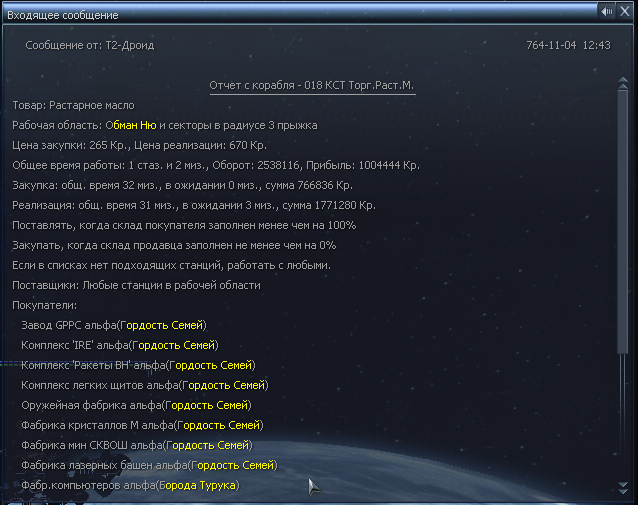

За счет наличия большого количества настроек, Т2-Дроид позволяет не просто извлекать выгоду от перевозки товара, но и подключать корабли к решению стратегических задач, например таких как
Большинство параметров работы могут быть изменены без перезапуска программы.
В любое время может быть получен отчет, предоставляющий исчерпывающую информацию о работе, выполненной за период времени с момента запуска или последнего сброса статистики.
В следующих двух диалоговых окнах от вас потребуется ввести
закупочную цену и цену реализации. Дроид будет покупать товар по цене ниже или
равной закупочной и продавать его про цене равной или выше цены реализации.
Последние 2 диалоговых окна требуют ввода сектора и количества прыжков. Эта
информация определяет рабочую область, использующуюся для поиска поставщиков и
покупателей, если не определены соответствующие списки.
Команда запуска дроида требует ввода базовых параметров. Этих параметров достаточно
для выполнения типовыз задач, однако вы можете захотеть более тонко настроить
параметры работы дроида для решения узкоспециализированных задач. Для этого
используйте дополнительные команды корабля, название которых начинается с
префикса Т2:.
Первым аргументом требуется ввести идентификатор списка. Смотрите на подсказку,
выводимую в верхней части диалогового окна "0 - Seller, 1 - Buyer, 2 - Den".
Для редактирования списка поставщиков вводите 0, для редактирования списка
покупателей вводите 1, для редактирования списка запрещенных станций вводите 2.
Далее необходимо указать операцию, которая будет выполнена над списком. Смотрите
подсказку в верхнем углу диалога "0 - Add, 1 - Delete, 2 - Clear". Для
добавления станции в список вводите 0, для удаления станции из списка вводите 1,
для очистки списка вводите 2.
Далее требуется ввести станцию которая будет добавлена или удалена из
соответствующего списка. При добавлении станции, операция выполняется только в
случае когда станция продает или покупает выбранный товар в зависимости от того,
какой список редактируется: список поставщиков или покупателей. При удалении
удаляются только те, которые находятся в списке. При очистке списка не забудьте
указать любую скотор и станцию, иначе операция не будет выполнена.
При активации команды в первом диалоговом окне необходимо указать тип станций,
которые необходимо найти. В верхней части диалога выводится подсказка Stations
0-supply, 1-demand. Введите 0, если хотите отобрать станции, производящие определенный
товар или 0, для станций-потребителей этого товара. В следующем диалоге необходимо
указать товар, которые должны производить или потреблять станции в зависимости
от выбора на предыдущем шаге. Следующие два диалога потребуют ввода сектора
и радиуса в прыжках, относительно выбранного сектора. Эта информация определяет
область поиска станций. В следующем диалоге 1-add, 2-delete укажите что конкретно
нужно сделать с найденными станциями. Если станции нужно добавить в список, то
вводите 1, если удалить, то вводите 2. В последнем диалоговом окне вам необходимо
выбрать к какому списку нужно все это применить. Смотрите на подсказку
To/Fr 0-seller, 1-buyer, 2-denie. Для применения к списку поставщиков вводите 0,
для применения к списку покупателей вводите 1, для применения к списку запрещенных
станций вводите 2.
На отработку команды требуется несколько секунд, по этому не спешите сразу
после ввода формировать отчет, иначе прервете выполнение команды, до того, как она
будет завершена.
Расшифровка всех параметров приводится ниже.
Но сначала несколько общих рекомендаций. Прежде всего помните - ВЫ самая мощная
сила, способная контролировать экономику во вселенной, а вовсе не какие-то
галторговцы, заботящиеся только о собственном кармане. Во-вторых, не жадничайте.
Игнорируя поставку батарей в рабочую область, вы угнетаете все виды производства,
потому что галторговцы начнут поставки только когда дела совсем плохи. А это - простои
и ваша упущеная прибыль. Устанавливайте вменяемые цены, иначе ваши корабли будут
простаивать, возможно сторонние фабрики тоже. Ориентируйтесь на сумму 100к дохода в
стазуру с одного дроида. Это конечно же относится к не ко всем продуктам, ситуациям
и регионам. Например, в случае с батареями может быть более низкий доход, но задача
перевозчиков батарей вовсе не заработать, а поддерживать обороты экономической
машины в регионе.
Второе подразумевает что у вас есть фабрики, на которых установлена разная ценовая политика,
но при этом имеются товары реализация или поставка которых является критичной (например
в регионе дефицит определенного ресурса).
Третье подразумевает что вы хотите оперировать редким товаром - таким, спрос или
предложение которого очень ограничено.
Важнейшим отличием Т2-Дроида от других программ является тот факт, что для него нет разницы
в какой части вселенной расположена фабрика. Вы можете поставить фабрику кристалов в секторе
Красный Свет и назначить дроида на снабжение всех ваших заправочных станций по всей вселенной.
Заправки - это электростанции, которые препятствуют перелету через опасные секторы,
например в Фортуне Елены с одной стороны, и Холм Аладны с другой и т.п. Или вы можете
поставить мегаразвлекательный комплекс в Фортуне Елены и производить там нелегальные товары.
В дальнейшем, в целях расширения сети сбыта вы будете добавлять найденные пиратские станции
в списки покупателей кораблей-агентов этого комплекса.
Выберите наиболее подходящий способ
формирования списка покупателей или поставщиков. Если ваши станции сосредоточены в одной
области и в этой области мало сторонних станций того же типа, используйте команду
Т2:Формирование списка, а затем с помощью команды Т2:Настройка списка удалите станции
NPC, попавшие в список. Если ваши станции разбросаны, то используйте команду Т2:Настройка
списка для формирования списка покупателей или поставщиков в зависимости от необходимости.
После этого, с помощью команды Т2:Конфигурация установите признак простоя. Для этого введите
сначала 0, а затем 1. Это заставит корабль работать только с указанными с списках станциях,
то есть с вашими.
Т2-Дроид - Системные требования
Т2-Дроид - Порядок использования
После установки программы, в меню торговых команд кораблей, оборудованных
Навигационным модулем МК1 появляется новая команда
Т2: Запуск дроида,
а в меню дополнительных команд команды
Т2: Отчет,
Т2: Настройка списка,
Т2: Конфигурация и
Т2: Формирование списка.
Т2-Дроид - Запуск программы
Для активации дроида выберите в меню торговых команд команду
Т2: Запуск дроида.
В первом диалоговом окне вам необходимо
указать какой товар должен перевозить дроид (каждый дроид может оперировать
только одним товаром).
Т2-Дроид - Настройка списка станций
Команда Т2: Настройка списка,
которая появляется в списке дополнительных команд корабля, позволяет редактировать
списки станций-поставщиков, станций-покупателей и запрещенных станций.
При активации команды требуется ввести три значения: идентификатор списка,
идентификатор операции и станцию.
Т2-Дроид - Формирование списка станций
Команда Т2: Формирование списка,
которая появляется в меню дополнительных команд корабля, это мощный инструмент,
который позволяет формировать списки станций-поставщиков, станций-покупателей
и запрещенных станций по условию. Эта команда значительно облегчает ведение
списков, так как за один запуск позволяет охватить несколько секторов. С помощью
этой команды вы можете добавлять и удалять станции, которые производят или потребляют
определенный товар, при чем этот товар не обязательно должен совпадать с рабочим
товаром - товаром который перевозит дроид.
Т2-Дроид - Конфигурация
Параметры работы дроида, могут быть изменены прямо во время работы с помощью
команды Т2: Конфигурация,
которая появляется в меню дополнительных меню корабля. При активации этой
команды требуется ввести два значения: идентификатор параметра и новое значение
параметра. При вводе первого параметра вверху выводится подсказка:
0WF,1SP,2BP,3BA,4SA,5WJ,6JR. Подсказка перечисляет все доступные параметры. Цифра
должна использоваться для ввода. Символы после цифры - это сокращенное название
параметра. Для изменения резерва для прыжкового двигателя смотрите на подсказку
6JR. Если вы хотите изменить это значение, вводите 6.
Т2-Дроид - Получение отчета

Отчет позволяет вам увидеть текущие параметры работы дроида, такие как сектор
и количество прыжков, определяющие рабочий регион, цены закупки и реализации,
списки поставщиков, покупателей и запрещенных станций, а так же режим, в котором
работает дроид. Кроме этого, из отчета можно узнать информацию финансового
характера: обороты, прибыль, суммы закупок и реализации. Не менее важно является
информация о простоях. На основе этой информации вы можете планировать дальнейшие
действия.
Т2-Дроид - Примеры использования
Использование Т2-Дроида требует детального анализа и планирования собственных
действий, что несомненно привносит в игру дополнительный интерес. В данном
параграфе вы найдете несколько практических примеров использования и вариантов
настройки параметров Т2-Дроида.
Т2-Дроид - Как заработать денег
Если вы совсем не хотите ломать голову, а просто желаете получать стабильный доход,
поставьте дроида на торговлю соевыми бобами в радиусе 3 прыжков с центром в секторе
Владения Герцога. В этом регионе достаточно производителей и потребителей этого товара
для того, что бы получать более 300 тысяч кредитов за стазуру с работы одного
дроида. Зайдите в меню торговых команд корабля и активируйте дроида. В диалоговых
окнах введите последовательность: Соевые Бобы, 16, 26, Владения Герцога, 3. После
этого в меню дополнительных команд выберите T2:Конфигурация и установите резерв
для прыжкового двигателя. Для этого в первом диалоге введите 6, а во втором 600.
Надеюсь, вы не забыли установить на корабль прыжковый двигатель?
Т2-Дроид - Как заработать больше денег
Раскрутите цепочки производства продуктов питания соответствующего региона. Например,
бифштексы кахуна в Аргон Прайм и близлежащих секторах. Для этого нужно поддерживать
работоспособность фабрик производства ресурсов. Ваша первая цель: ранчо и пшеничные
фермы. Назначьте два корабля (желательно с большими трюмами) на снабжение этих фабрик
батареями. Цену закупки и реализации батарей подберите самостоятельно. С помощью команды
T2:Формирование списка сформируйте списки покупателей. Для первого корабля это должны
быть станции, производящие пшеницу (значения которые нужно вводить в диалогах команды
Формирование списка: 0, Отборная Пшеница, Аргон Прайм, 3, 1, 1). Для второго корабля
это должны быть станции, производящие мясо аргну (значения 0, Мясо Аргну, Аргон Прайм,
3, 1, 1). После того, как первоочередные задачи по снабжению фабрик ресурсов будут
выполнены, поставщики батарей начнут доставлять батареи на другие станции, в число
которых так же попадут кахунопекарни и потребители бифштексов кахуна. Назначьте еще
один корабль на торговлю бифштексами в этом же регионе. На самом деле, есть более
интересные регионы для раскрутки продуктовой цепочки. Попробуйте найти их самостоятельно.
Т2-Дроид - Собственные фабрики
Использование дроида для обслуживания собственных фабрик не всегда оправдано. В обычных
случаях лучше всего использовать коммерческого агента, входящего в состав официального
бонус-пака. Назначать дроида на обслуживание станций имеет смысл в следующих случаях:
Первое подразумевает что у вас достаточное количество фабрик которые нужнаются в поставках
или реализации товара и их обслуживание имеет первоочередной приоритет. Это естественно,
так как от этого зависит период их окупаемости.
Т2-Дроид - Установка
Т2-Дроид - Удаление
Т2-Дроид - История изменений
v1.02 от 2013-04-17
v1.01 от 2008-04-02
Т2-Дроид - Примечания